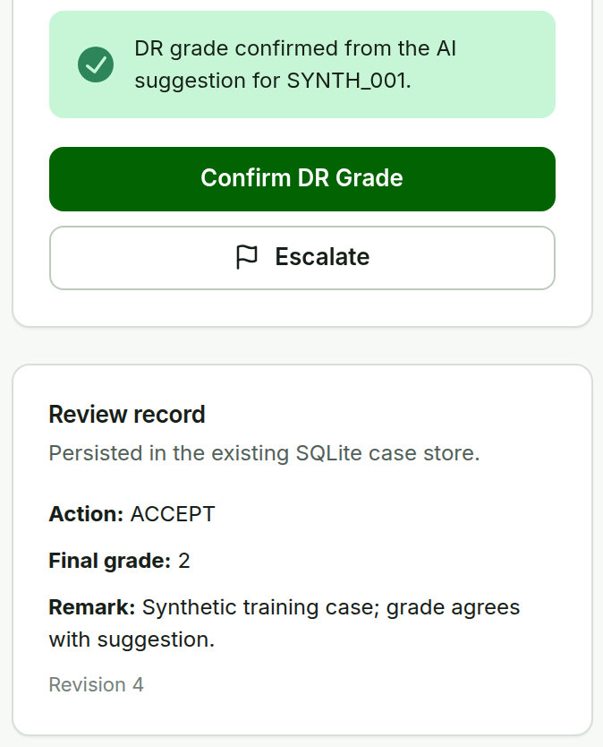
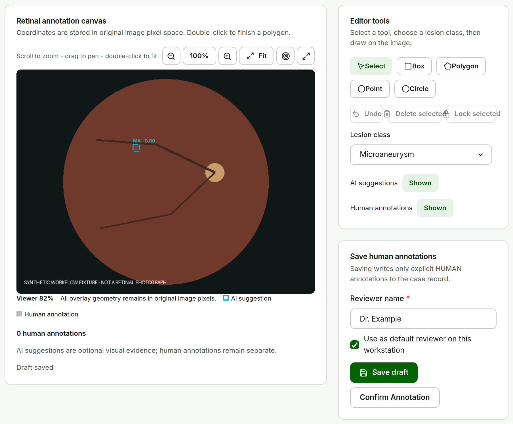

Retinal Review
Workbench
Clinician-led retinal review and dataset preparation
The hospital chooses the image. The Workbench reviews it.
Hospital image storage
Refer / Not-refer already recorded
Clinician or authorized user
chooses a suitable candidate image
Approved staging
the hospital's own transfer process
Workbench
Workspace input → Worklist

The project team does not browse hospital storage or pre-select images.
Team Image Sampling Requirements · IMG-SAMP-001–003, 010, 020, 031, 040, 070, 100
One case, eight steps, three human confirmations.
Worklist
find the case
Confirm Image
patient key, eye
Confirm 1Review
image first
Optional AI
RETFound · PRISM-DR
OptionalConfirm DR Grade
final human grade
Confirm 2Edit Annotations
only when needed
When neededConfirm Annotation
active set hash
Confirm 3Dataset
readiness, export
Clinician User Manual, Quick Start · Figure 1
Pick the case. Confirm patient key and eye.


Clinician User Manual §2 · UI /worklist, ConfirmImageDialog · synthetic data
The image stays first. AI is optional evidence.

RETFound grade suggestion
a model score, not a calibrated probability

PRISM-DR lesion overlays
toggle or filter · an empty result never proves absence

Clinician User Manual §3 · UI /review/:imageId, RetinalCanvas · synthetic fixture with mock providers
The clinician's grade is the decision.


AI_ACCEPTEDSame grade as the model suggestion
AI_CORRECTEDDifferent grade from the model suggestion
MANUALNo model result: graded by the clinician alone
Clinician User Manual §4 · UI /clinician-review/:imageId · POST /v1/cases/{id}/review
Draw only when needed. A draft is not a confirmation.

Box · Polygon · Point · Circle
Human annotations are stored in original image pixels, separate from AI evidence.
Autosaves about a second after you stop editing.
Draft
Work in progress. Not yet part of the Lesion-ready dataset.
Confirm Annotation
Records reviewer, time, and a hash of the active set. Any later edit needs confirming again.
Clinician User Manual §5–7 · UI /edit/:imageId, AnnotationEditorPage · PUT /v1/cases/{id}/annotations
Fix one ROI. Keep the original AI evidence.

Microaneurysm · 0.80


Hemorrhage · clinician corrected
Clinician User Manual §5.2 · UI LesionActionPopover · POST /v1/cases/{id}/lesion-review
Less repetition, without silently changing clinical state.


You have unsaved annotation changes. Leave this case?
Browser confirmation shown while a draft is unsaved, saving, or failed.
Previous / Next · Next action
Moves through cases; never saves or confirms. The hint is guidance only.
Save & Next
Saves the draft, or confirms the grade, then opens the next case.
Autosave draft
Unsaved changes → Draft saved, about a second after editing stops.
Default reviewer
Browser-local convenience; editable, not authentication.
Unsaved-changes guard
Leaving with unsaved edits asks first.
Clinician User Manual §6 · CaseNavigation, NextActionHint, reviewerPreference, AnnotationEditorPage
Grade readiness ≠ lesion readiness.
DR-grade task
- Valid source provenance
- Included fundus image, Confirm Image
- Final clinician grade, reviewer, and time
Lesion-annotation task
- Valid source provenance
- Included fundus image, Confirm Image
- Confirm Annotation matching the active set hash

One task can be ready while the other is not. PAT0003 has a final grade but no annotation confirmation, so it exports as DR-ready only.
Clinician User Manual §8 · UI /datasets · docs/DATASET_MANIFEST.md (s4.dataset-manifest.v2)
Every record traces back to its source.
Source image
admitted once, never modified
source SHA-256Analysis image
derived copy with coordinate mapping
analysis SHA-256Model evidence
kept exactly as returned
model id · revisionClinician decisions
grade, corrections, removals
reviewer · time · hashDataset export
task-specific readiness
manifest v2Workstation
/app/ · local Workspace · export
Protected hospital LAN
TLS and firewall at the boundary
Model API
/health · /v1/models · predict
Hospital GPU host
verified RETFound + PRISM-DR
Clinician User Manual §9 · Deployment & Operations Manual · docs/architecture
Now let's review one case.
Switch to the workstation at 127.0.0.1:8000/app/ with the synthetic Workspace.
Retinal Review Workbench 0.7.0 · research and clinical-support proof of concept · no autonomous diagnosis or referral